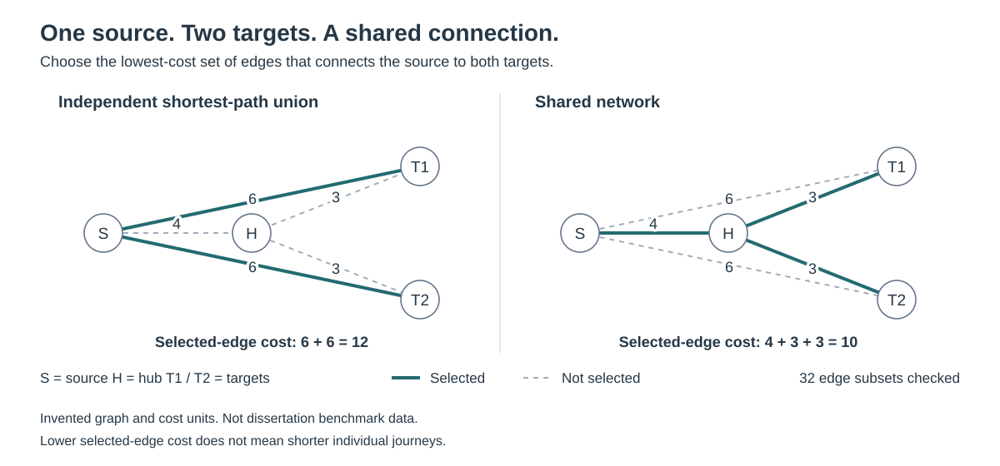

Synthetic, reproducible example
A worked network-access example
Compare separate routes with a network that shares paths between destinations.
New synthetic teaching companion, not the dissertation implementation or its research benchmark. Costs are invented units, not travel times or distances.
Run it locally
Python 3.10 or newer. Standard library only; no accounts, credentials, or external datasets. From the repository root:
python examples/network-access/demo.py
python -m unittest discover -s examples/network-access -p test_demo.py -vRecorded demonstration results
These are outputs of the included teaching example, not measurements of a client system or field accuracy.
- Independent shortest-path union cost
- 12
- Minimum shared-network cost
- 10
- Exhaustively checked edge subsets
- 32
{kind=link}

| Target | Route | Route cost |
|---|---|---|
| T1 | S → T1 | 6 |
| T2 | S → T2 | 6 |
| Edge | Cost counted once |
|---|---|
| H ↔ S | 4 |
| H ↔ T1 | 3 |
| H ↔ T2 | 3 |
| Targets | Edges | Subsets | Path-union cost | Shared cost | Dijkstra median ms | Exhaustive median ms |
|---|---|---|---|---|---|---|
| 2 | 5 | 32 | 12 | 10 | 0.011 | 0.0548 |
| 3 | 9 | 512 | 18 | 13 | 0.0168 | 1.0468 |
| 4 | 13 | 8192 | 24 | 16 | 0.0228 | 21.8929 |
Interpretation and limitations
- For each target the direct path costs 6, versus 7 through H. Yet sharing S–H gives a total selected-edge cost of 4 + 3 + 3 = 10 instead of 6 + 6 = 12. Individual journeys need not become shorter.
- The comparable baseline is the union of independent shortest-path edges, counted once. Summing journey costs would double-count any shared edge.
- Solver settings: simple undirected graphs; positive integer edge costs; all targets required; optional intermediate nodes; exhaustive enumeration of every subset; no pruning, tolerance, heuristic, random seed, external solver, or time limit; single process; hard cap 16 edges (65,536 subsets).
- Timings are medians of 5 runs after one warm-up, measured with perf_counter_ns, including validation and solving but excluding fixture creation, report assembly, and file I/O. They are illustrative, not a scalable algorithm comparison.
- Measured environment: CPython 3.12.14, Windows 11, AMD64. Workload and timing noise vary by machine; rerunning overwrites timings.
- This familiar minimum connecting-subgraph example is not a novelty claim, proof about the original formulation, or validation of convex-hull preprocessing. The public R source uses a separate OMPR/GLPK formulation with flow variables.
- No unpublished manuscript, employer code, client records, or real location data is included. No journal publication or DOI is asserted.